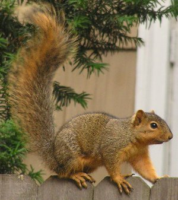
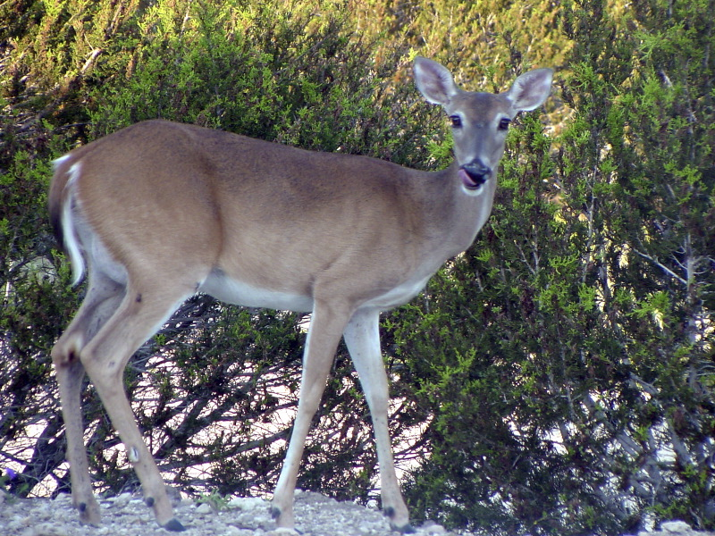
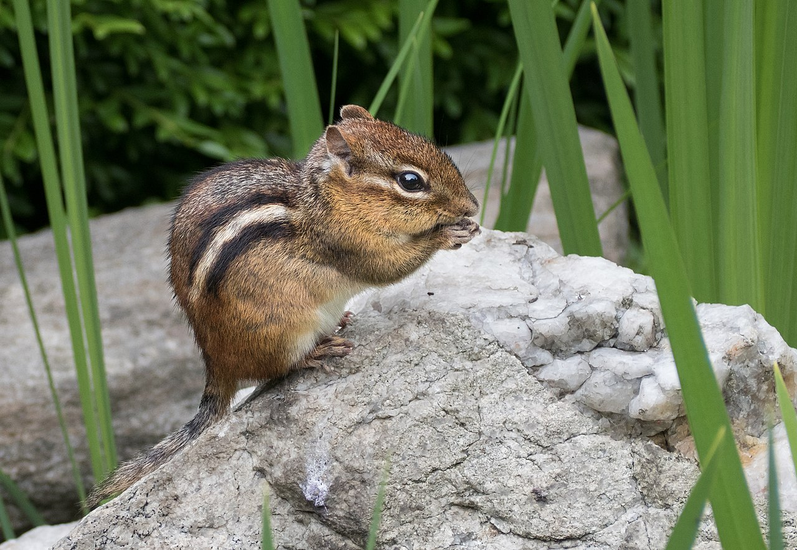
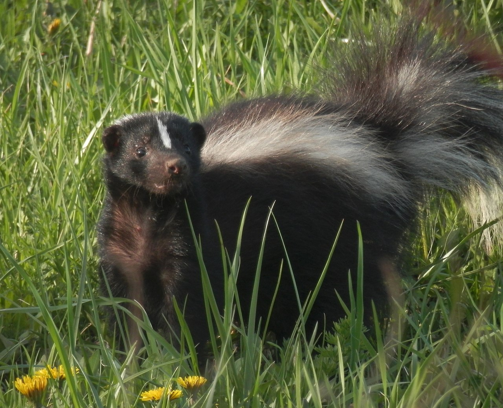
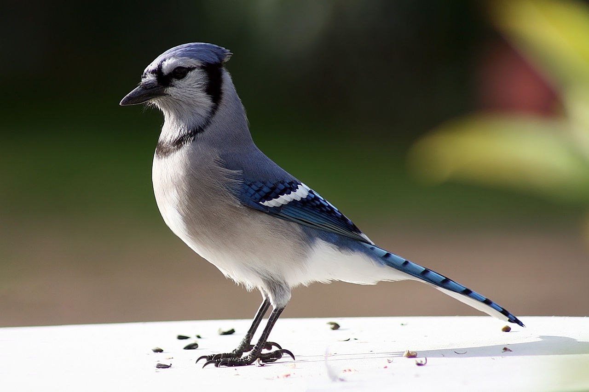

The fox squirrel, also known as the eastern fox
squirrel or Bryant's fox squirrel, is the largest species of tree
squirrel native to North America. Despite the differences in size
and coloration, they are sometimes mistaken for American red
squirrels or eastern gray squirrels in areas where the species
co-exist.

The white-tailed deer, also known as the whitetail
or Virginia deer, is a medium-sized deer native to North America,
Central America, Ecuador, and South America as far south as Peru
and Bolivia.

Chipmunks are small, striped rodentse. Chipmunks
are found in North America, with the exception of the Siberian chipmunk
which is found primarily in Asia.

Skunks are North and South American mammals.
While related to polecats and other members of the weasel family,
skunks have as their closest Old World relatives the stink badgers.
The animals are known for their ability to spray a liquid with a strong,
unpleasant smell. Different species of skunk vary in appearance from
black-and-white to brown, cream or ginger colored, but all have
warning coloration.

The blue jay is a passerine bird in the family Corvidae,
native to eastern North America. It resides through most of eastern and central
United States, although western populations may be migratory. Resident
populations are also found in Newfoundland, Canada, while breeding
populations can be found across southern Canada. It is predominantly
blue with a white chest and underparts, and a blue crest; it has a
black, U-shaped collar around its neck and a black border behind the
crest.
The turkey is a large bird, which is native to
the Americas. The genus has two extant species: the wild turkey of
North America and the ocellated turkey. Males of both turkey species
have a distinctive fleshy wattle or protuberance that hangs from the
top of the beak. They are among the largest birds in their ranges.